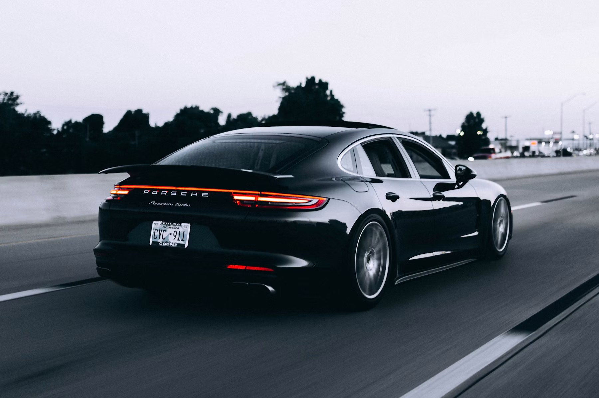
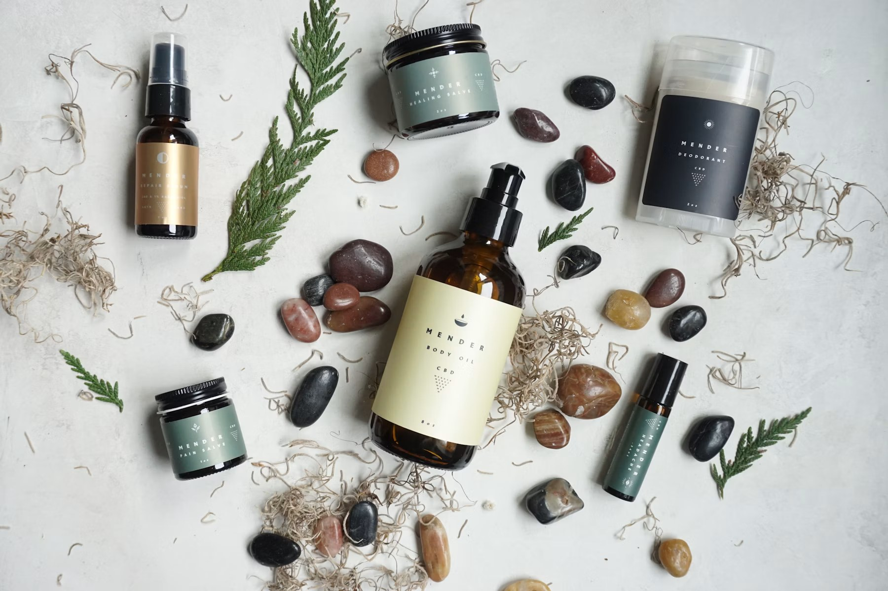
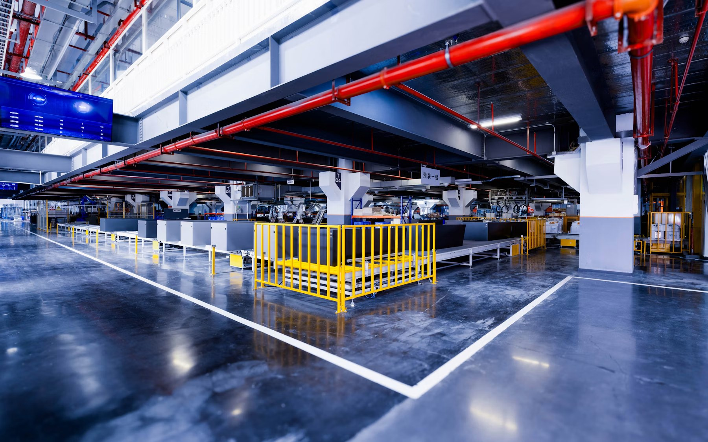
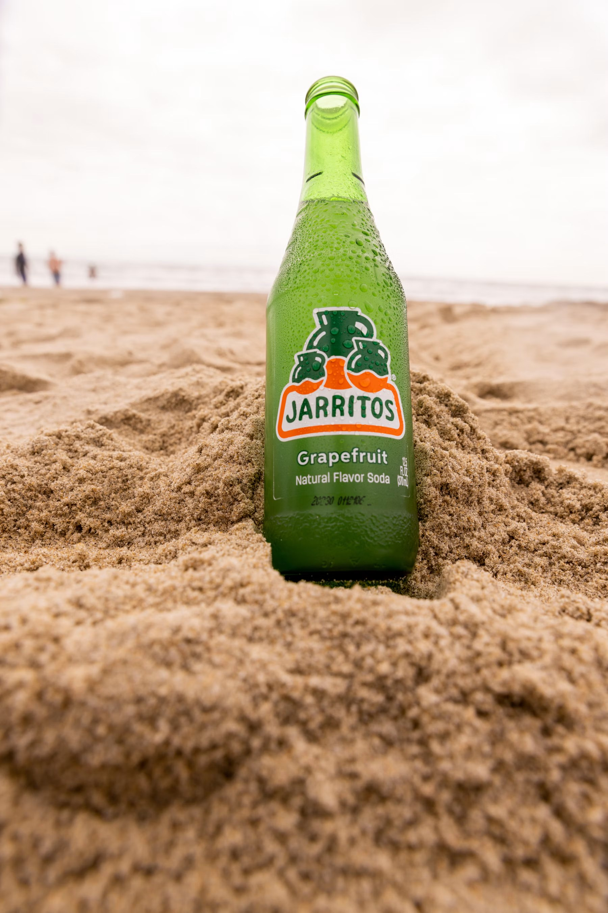
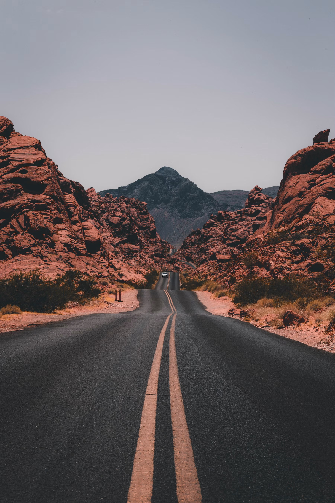

CHARACTER STORIES
✧
У каждой истории — свой герой.01 / ПЕРСОНАЖИ
Герои, которые оживают
Короткие ролики с персонажами: эмоции, взаимодействие и маленькие истории с большим настроением.
Персонажи и сюжетVERBA · AI ARTIST · DIRECTOR
Я VERBA — AI-художник, аниматор
и графический дизайнер. Создаю рекламные
проекты от идеи до финального кадра.
01 / ОТ ИДЕИ ДО ЭКРАНА
Немного технологий.
Много воображения.
Показываем продукт, оживляем персонажей
и превращаем вашу идею в историю,
которую хочется досмотреть.
Короткие ролики с персонажами: эмоции, взаимодействие и маленькие истории с большим настроением.
Персонажи и сюжетРеклама, распаковки и взаимодействие с продуктом. С персонажами или без — с вниманием к каждой детали.
Реклама · РаспаковкиДлинные ролики с продуманной драматургией и единым визуальным стилем. От идеи и сценария до финального монтажа.
Длинный формат · Под ключВизуальные образы на странице передают настроение и не являются примерами выполненных проектов.
ИЗБРАННЫЕ ПРОЕКТЫ / 01—05
Реклама, изображения и видео для брендов
с вниманием к идее, свету и деталям.

01AUTO / AI FILMКинематографичная рекламная история, где город, скорость и свет превращают автомобиль в ощущение свободы.

02BEAUTY / PRODUCTМакросъёмка текстур и кожи для бьюти-ролика, в котором продукт ощущается чистым, тактильным и премиальным.

03INDUSTRIAL / BRAND FILMПромышленное пространство превращено в выразительный бренд-фильм с пролётами камеры, светом и масштабом.

04BEVERAGE / CAMPAIGNЭнергичная кампания для напитка, соединяющая предметную красоту, летнюю атмосферу и музыкальный ритм.

05TRAVEL / AI SERIESЕдиная фотореалистичная серия о природных и архитектурных локациях России в одном свете и настроении.
Изображения перенесены из исходного сайта и служат обложками. Полные материалы появятся в подборке на Яндекс Диске.
02 / ПОЛНЫЙ ЦИКЛ AI-ПРОДАКШНА
Подключаюсь на отдельный этап
или беру рекламный проект целиком.
Художественные и рекламные изображения в любом стиле — от фотореализма до авторской графики.
Идея, драматургия, режиссёрское решение, сториборд и превиз до начала производства.
Оживление кадров, работа с движением и ритмом, цельная сборка коротких и длинных роликов.
Саунд-дизайн, цветокоррекция, ретушь, устранение AI-артефактов и адаптации под нужные форматы.
КАК РОЖДАЕТСЯ ИСТОРИЯ
Находим сильный рекламный ход, визуальный язык и точное настроение проекта.
Собираем драматургию, структуру ролика, тексты и режиссёрское решение.
Показываем ключевые сцены, ракурсы и монтажную логику до производства.
Генерируем и дорабатываем персонажей, локации, предметные и продуктовые кадры.
Превращаем изображения в движение, добавляем работу камеры, свет и динамику.
Собираем ритм, переходы и цельную историю под формат и задачу бренда.
Добавляем музыку, саунд-дизайн, атмосферу и при необходимости озвучку.
Финальная цветокоррекция, графика, ретушь, титры и адаптации под нужные форматы.
Результат Готовый рекламный ролик или кампания в единой визуальной системе, адаптированные под площадки бренда.
ТЕХНОЛОГИИ ОТКРЫВАЮТ ДВЕРИ. ИСТОРИИ ДАЮТ ИМ СМЫСЛ.
Идея, задача, настроение.
Сначала — то, что хочется сказать.
Образы, герои, свет и движение.
Каждый кадр работает на идею.
Монтаж, ритм и звук.
Всё складывается в готовый ролик.
VERBA / ЧЕЛОВЕК ЗА КАДРОМ
Более 5 лет соединяю режиссуру, дизайн, монтаж и возможности AI.
Работаю на стыке художественного изображения, анимации, графического дизайна, Photoshop, монтажа и режиссуры. Могу подключиться к отдельному этапу или взять проект целиком — от концепции и раскадровки до звука и финального постпродакшна.
Создаю статику в разных визуальных стилях, оживляю кадры, собираю ролики и вручную дорабатываю AI-материал: устраняю артефакты, выравниваю детали и довожу изображение до чистого коммерческого результата.
SELECTED CREDITS
Имиджевый рекламный ролик
Воссоздание семичасового фильма по книге Владимира Гиляровского · работа в команде
Рекламные ролики для брендов
Первый в мире полнометражный AI-мультфильм · работа в команде
Работа над анимационным проектом для платформы
Рекламные и имиджевые проекты для крупных заказчиков
Рекламная кампания для крупных дискаунтеров СНГ и Европы
Визуальный проект, посвящённый популяризации города
Проекты для технологических выставок в галереях
СЛЕДУЮЩАЯ ИСТОРИЯ МОЖЕТ БЫТЬ ВАШЕЙ
Короткий ролик или целая вселенная.
Начнём с вашей идеи.